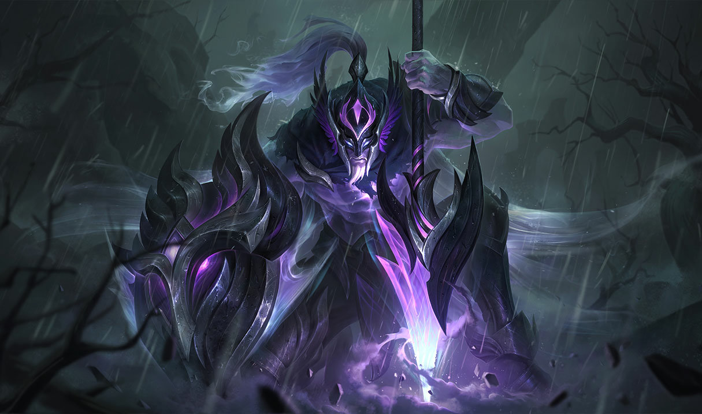
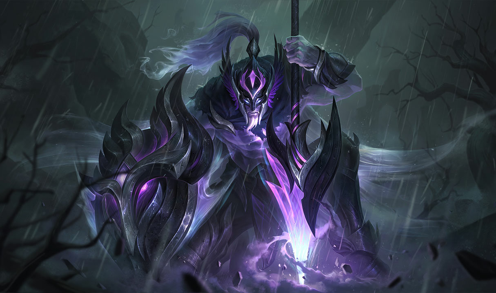

League of Legends (tambien conocido como LOL), es un videojuego multijugador de arena de batalla en línea
desarrollado
y publicado por Riot Games.
Video Presentación
Inspirándose en Defense of the Ancients, un mapa personalizado para Warcraft III, los fundadores de Riot
buscaron desarrollar un juego independiente del mismo género.
Desde su lanzamiento en octubre de 2009, LoL ha sido un juego gratuito y se monetiza a través de la compra
de
elementos para la personalización de personajes.
El juego está disponible para Microsoft Windows y macOS.
En el juego, dos equipos de cinco jugadores luchan en un combate jugador contra jugador, cada equipo
ocupando y
defendiendo su mitad del mapa.
Cada uno de los diez jugadores controla un personaje, conocido como "campeón", con habilidades únicas y
diferentes estilos de juego. Durante una partida,
los campeones se vuelven más poderosos acumulando puntos de experiencia y ganando oro que se emplea para la
compra de artículos para derrotar al equipo contrario.
 
